oe2eci
ECI position and velocity from Keplerian orbital elements.
Back to Astrodynamics Toolbox Contents.
Contents
Syntax
[r_eci,v_eci] = oe2eci(a,e,i,Om,w,nu) [r_eci,v_eci] = oe2eci(a,e,i,0,Pi,nu) [r_eci,v_eci] = oe2eci(a,e,i,Om,0,u) [r_eci,v_eci] = oe2eci(a,e,i,0,0,l)
Description
[r_eci,v_eci] = oe2eci(a,e,i,Om,w,nu) finds the position (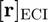) and inertial velocity (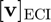) resolved in the ECI frame given the Keplerian orbital elements (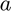, 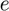, 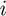, , 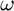, 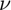).
[r_eci,v_eci] = oe2eci(a,e,i,0,Pi,nu) does the same as the previous syntax, but replaces the argument of periapsis () with the longitude of periapsis (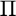). Note that this also requires that RAAN be set to 0 (i.e. 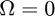). This syntax should be used for non-circular + equatorial orbits.
[r_eci,v_eci] = oe2eci(a,e,i,Om,0,u) does the same as the first syntax, but replaces the true anomaly () with the argument of latitude (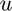). Note that this also requires that the argument of periapsis be set to 0 (i.e. 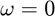). This syntax should be used for circular + inclined orbits.
[r_eci,v_eci] = oe2eci(a,e,i,0,0,l) does the same as the first syntax, but replaces the true anomaly () with the true longitude (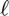). Note that this also requires that RAAN and the argument of periapsis be set to 0 (i.e. 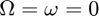). This syntax should be used for circular + equatorial orbits.
Input/Output Parameters
| Variable | Symbol | Description | Format | Units | |
| Input | a | semi-major axis | 1×1 double |
m | |
| e | eccentricity | 1×1 double |
- | ||
| i | inclination | 1×1 double |
rad | ||
| Om | right ascension of the ascending node | 1×1 double |
rad | ||
| w | argument of periapsis | 1×1 double |
rad | ||
| nu | true anomaly | 1×1 double |
rad | ||
| Output | r_eci | position resolved in ECI frame | 3×1 double |
m | |
| v_eci | inertial velocity resolved in ECI frame | 3×1 double |
m/s |